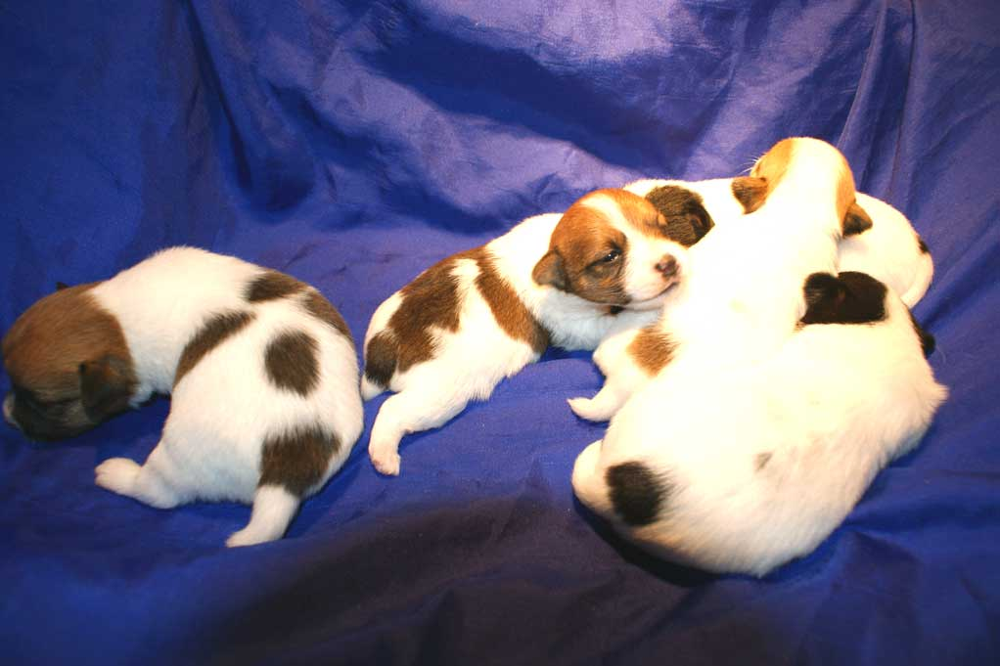
27.12.2009 - Importowana z Australii Pretorium I'M CEEANNE urodzi³a 5 œlicznych szczeniaczków. Ojcem miotu jest INFERNO Balao, którego przodkowie równie¿ wywodz¹ siê z Australii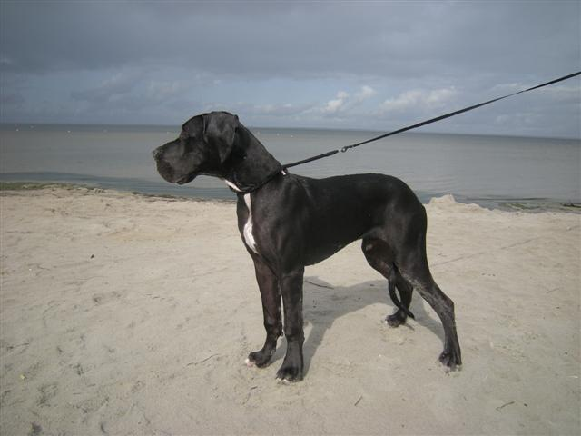
15.11.2009 - Miêdzynarodowa wystawa w Kielcach - MICHELLE MA BELLE - CAC, Res.CACIBKING SIZE - Zwyciêstwo M³odzie¿y
 08.11.2009 - Miêdzynarodowa wystawa w Poznaniu - MICHELLE MA BELLE jak zwykle
niezawodna - CAC, CACIB, Zwyciêstwo Polski
08.11.2009 - Miêdzynarodowa wystawa w Poznaniu - MICHELLE MA BELLE jak zwykle
niezawodna - CAC, CACIB, Zwyciêstwo PolskiB³êkitna KALLOO LILIROSE - M³odzie¿owe Zwyciêstwo Polski
KING SIZE - oc. dosk. lokata 3 w stawce 10
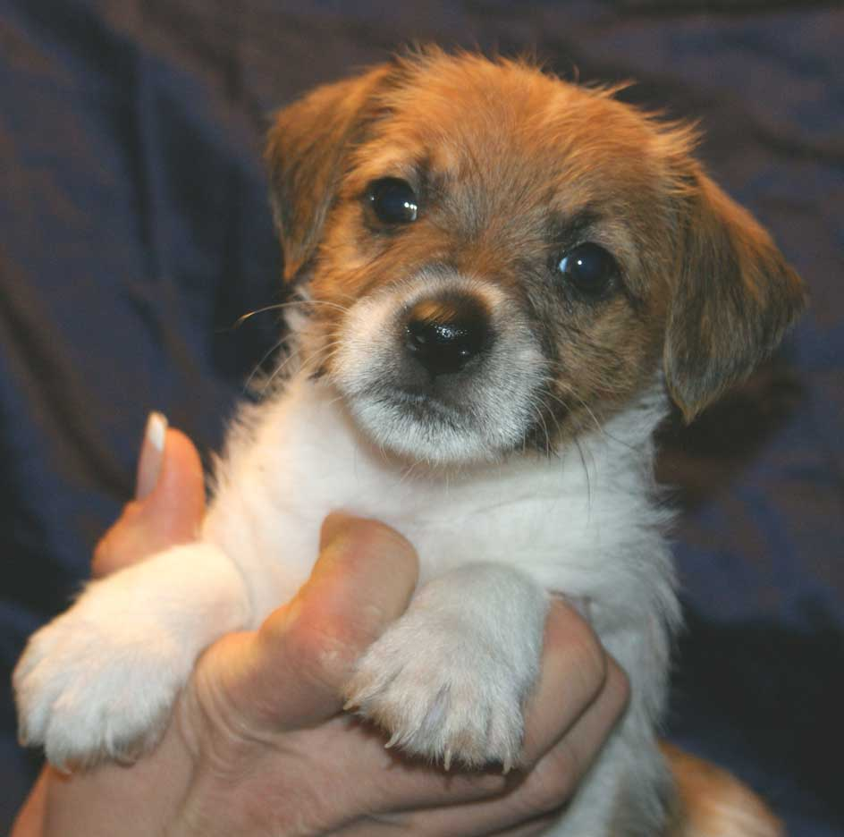
04.11.2009 - pierwsze szczeniaczki po INFERNO Balao przysz³y na œwiat w naszej hodowli. Mama to YACUZA Balao.10.10.2009 - Œwiatowa Wystawa w Bratys³awie -
MICHELLE MA BELLE - ocena doskona³a lokata 3 w konkurencji 12
JADE Balao - ocena doskona³a, Res. CAC
INFERNO Balao - ocena doskona³a
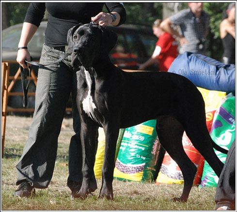
20.09.2009 - Klubowa Wystawa w £odziKALOO LILIROSE - II BIS Szczeni¹t
MICHELLE MA BELLE - CWC
KING SIZE - I w.o.
19.09.2009 - Krajowa Wystawa w £odzi
Debiut Wystawowy KING SIZE Balao oraz jego w³aœcicieli ;p - I W.O., Naj. Szczeniê
11.09.2009 - Krajowa Wystawa w Warszawie - INFERNO Balao - BOB oraz II BOG
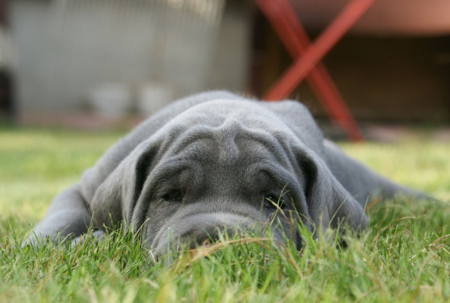
23.08.2009 - Doczekaliœmy siê drugiego miotu OH MY DARLING. Ojcem szczeni¹t jest NANKIN vom Junkerhaus. 11-13.08.2009 - Dwie Wystawy Miêdzynarodowe oraz Klubowa Dogów
Niemieckich na Litwie.
11-13.08.2009 - Dwie Wystawy Miêdzynarodowe oraz Klubowa Dogów
Niemieckich na Litwie. MICHELLE - 3 x CAC, 1 x CACIB 1 x Res.CACIB
LOVE STORY 2 x CAC, 1 x CACIB
 05.08.2009 - Krajowa wystawa w Zakopanym - MICHELLE MA BELLE BOB, I BOG , I Best in Show !!!
05.08.2009 - Krajowa wystawa w Zakopanym - MICHELLE MA BELLE BOB, I BOG , I Best in Show !!!
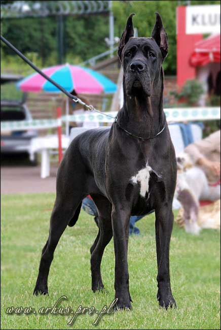
11.07.2009 - Miêdzynarodowa wystawa w Warszawie - MICHELLE MA BELLE - CAC, CACIB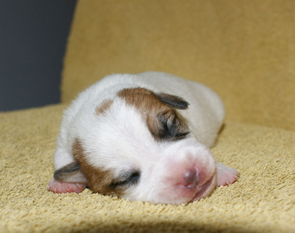
01.07.2009 - Stjarnlides Jack LOREDANA urodzi³a swoje pierwsze szczeniaczki, piêciu ch³opców i tylko jedn¹ dziewczynkê.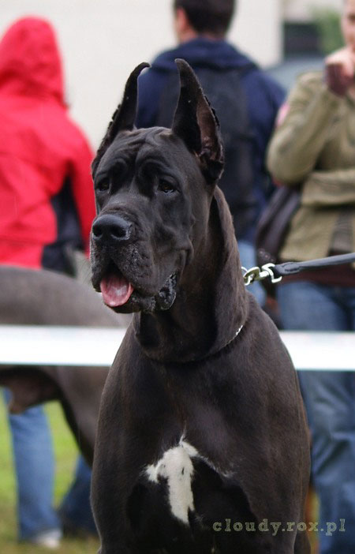
27.06.2009 - Miêdzynarodowa wystawa w Krakowie - MICHELLE MA BELLE Balao - ponownie CAC i CACIB !!!28.06.2009 - Drugiego dnia wystawy JADE Balao - CAC, CACIB, BOB, II BOG
 14.06.2009 - LOVE STORY Balao na wystawie w Lublinie ponownie otrzyma³a tytu³ Zwyciezca M³odzie¿y oraz Najlepszy Junior
14.06.2009 - LOVE STORY Balao na wystawie w Lublinie ponownie otrzyma³a tytu³ Zwyciezca M³odzie¿y oraz Najlepszy JuniorNa tej samej wystawie FUBU PLUSH Balao uzyska³ ostatni wniosek CWC potrzebny do ukoñczenia Championatu Polski
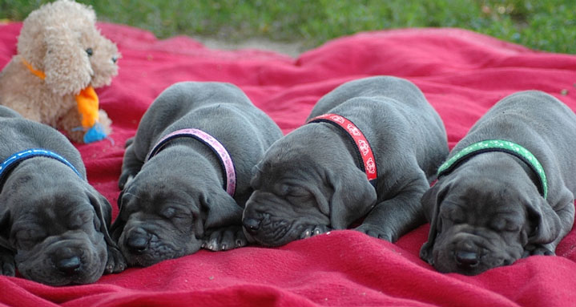
08.06.2009 - KATIUSZA i OUT OF LAW BILLLY THE KID Balao zostali rodzicami miotu "J" Balao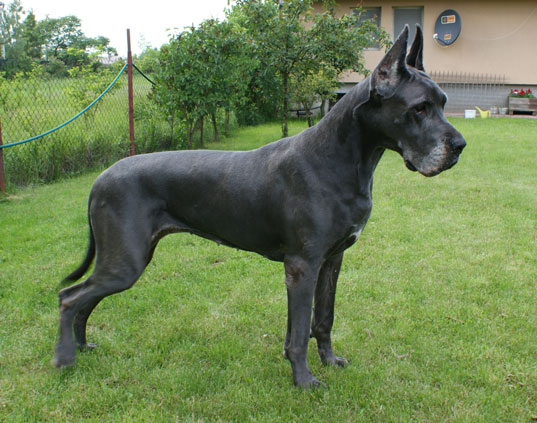
02.06.2009 - JAGUSIA - JASMIN Medium obchodzi³a swoje 9 urodziny !!! Nadal pe³na temperamentu i chêtna do zabawy. Do galerii dodaliœmy kilka zdjêæ z urodzinowej sesji. 23.05.2009 - Miêdzynarodowa wystawa w Lesznie i kolejny sukces wspania³ej JADE -
CAC, CACIB, BOB oraz III BOG
23.05.2009 - Miêdzynarodowa wystawa w Lesznie i kolejny sukces wspania³ej JADE -
CAC, CACIB, BOB oraz III BOG
 16.05.2009 - Klubowa Wystawa Terierów.
16.05.2009 - Klubowa Wystawa Terierów. JADE Balao ZWYCIÊZC¥ KLUBU i BOB !!!
INFERNO Balao - CAC
FOR PLEASURE of the Hunters Pride - CAC
 02.05.2009 - Miêdzynarodowa Wystawa w £odzi. Mimo ¿e INFERNO przed wejœciem na ring
zosta³ zaatakowany i pogryziony przez konkurenta z klasy championów, dzielnie stawi³ mu czo³a na ringu otrzymuj¹c CAC, CACIB, BOB. GUMMIE
BEAR otrzyma³ kolejne CAC.
02.05.2009 - Miêdzynarodowa Wystawa w £odzi. Mimo ¿e INFERNO przed wejœciem na ring
zosta³ zaatakowany i pogryziony przez konkurenta z klasy championów, dzielnie stawi³ mu czo³a na ringu otrzymuj¹c CAC, CACIB, BOB. GUMMIE
BEAR otrzyma³ kolejne CAC.Na drugi dzieñ, tak¿e MISZELI sprzyja³o szczêœcie, oprócz CAC otrzyma³a swój pierwszy CACIB
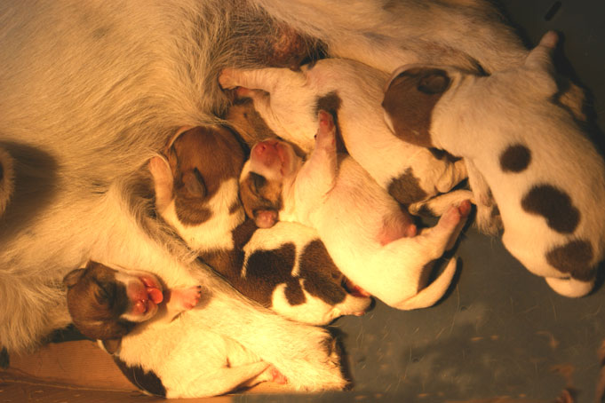
01.05.2009 - VENDETTA urodzi³a piêæ niezwykle kolorowych szczeni¹t. Ich ojcem jest CZARUJ¥CY CIAPEK Magor.01.05.2009 - Krajowa Wystawa w Dobrym Mieœcie, JADE Balao - CAC, NDSwR, BOB
25-26.04.2009 - 2 x CACIB Satu Mare (Rumunia). Mia³ tam swój wystawowy debiut FIRST RLASH z Jerene, debiut bardzo udany, na obydwu wystawach otrzyma³ tytu³ Best Baby. FOR PLEASURE - 2 x Cacib, 1 x BOB, Pretorium I'm CEEANNE 1 x Cacib, 1 x Res. Cacib, Stjarenlides Jack LOREDANA 2 x CAC.
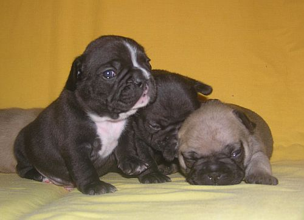
22.04.2009 - MAFIA DuAn wraz z KUBUSIEM Draczyn zostali szczêœliwymi rodzicami 4 wyj¹tkowo pulchnych kluseczek. Wiêcej informacji wkrótce.Zapraszamy do obejrzenia buldo¿ków:
MIOT "N"
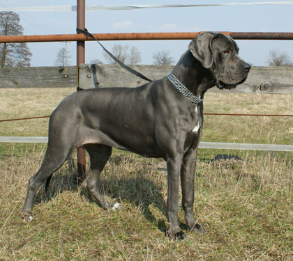
19.04.2009 - Krajowa wystawa w Lublinie. M³odziutka LOVE STORY Balao mia³a bardzo udany debiut. Otrzyma³a tytu³ Zwyciêzca M³odzie¿y oraz Najlepszy Junior, a nastêpnie w porównaniu z ubieg³orocznymi Zwyciêzcami Klubu otrzyma³a tytu³ Zwyciêzca Rasy !!!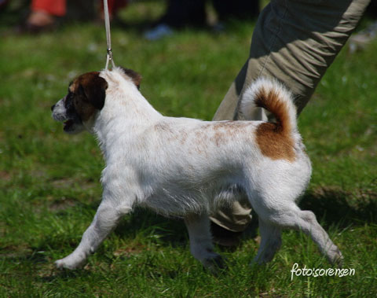
05.04.2009 - Krajowa Wystawa w Nowym Dworze Mazowieckim.INFERNO BALAO - CWC, NDPwR, BOB
GUMMIE BEAR Balao - CWC - ukoñczy³ Ch.Pl.
FOR PLEASURE of the Hunters Pride - CWC
Stjarnlides Jack LOREDANA - CWC, NDSwR
CHIQUITA Balao - CWC
04.04.2009 - MICHELLE MA BELLE Balao - debiutuj¹ca w Klasie Poœredniej otrzyma³a pierwsze CWC
20.03.2009 - Miêdzynarodowa Wystawa w Katowicach. Ma³e Jack Russelki znów dzielnie siê spisa³y :) JADE Balao - CWC, CACIB. INFERNO Balao - CWC, Res, CACIB
02.03.2009 - Pepe (`) ...
07.02.2009 - Miêdzynarodowa Wystawa w Rzeszowie. Stjarnlides Jack LOREDANA wygra³a swoja klasê i otrzyma³a CWC
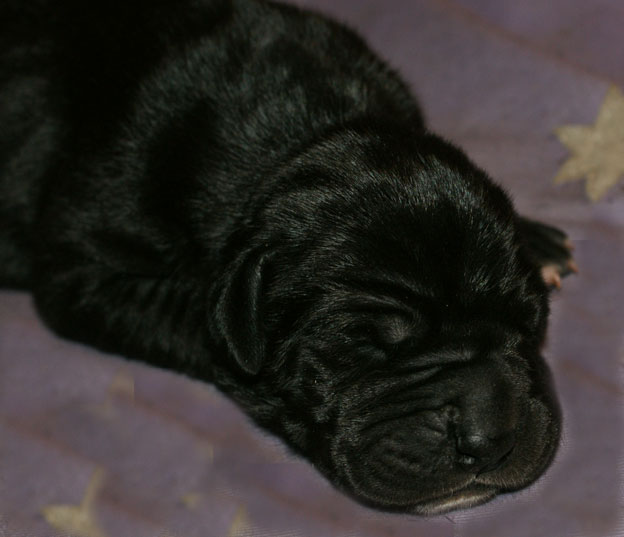
17.01.2009 - OH MY DARLING Balao urodzi³a swój pierwszy, d³ugo wyczekiwany przez nas miot.Na œwiecie przywitaliœmy 7 ma³ych czarnych i b³êkitnych chrupcz¹tek.
 01.01.2009 - Pierwszego dnia nowego roku, przysz³y na œwiat szczeniaczki : dwa
pieski oraz trzy suczki. Rodzicami miotu "O" s¹ Int.Ch. FOR PLEASURE of the Hunters Pride oraz Ch.Pl. WONDERFUL WHOOPIE Ons Eiland
01.01.2009 - Pierwszego dnia nowego roku, przysz³y na œwiat szczeniaczki : dwa
pieski oraz trzy suczki. Rodzicami miotu "O" s¹ Int.Ch. FOR PLEASURE of the Hunters Pride oraz Ch.Pl. WONDERFUL WHOOPIE Ons Eiland